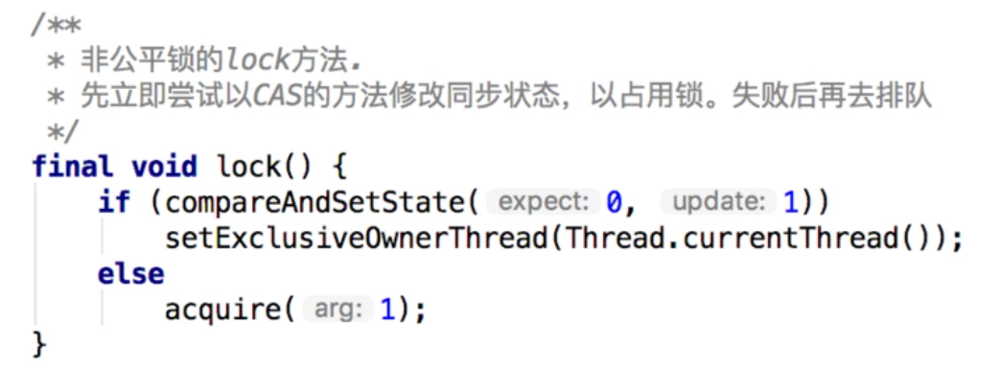

本文以ReentrantLock的调用为例，说明AbstractQueuedSynchronizer提供的独占功能。
本文结构如下：
- 以ReentrantLock的公平策略为例，分析AbstractQueuedSynchronizer的独占功能
- 以ReentrantLock的非公平策略为例，分析AbstractQueuedSynchronizer的独占功能
- 分析AbstractQueuedSynchronizer的锁中断、限时等待等功能
ReentrantLock的公平策略原理
本节对ReentrantLock公平策略的分析基于以下示例：
假设现在有3个线程：ThreadA、ThreadB、ThreadC，一个公平的独占锁，3个线程会依次尝试去获取锁：
ReentrantLock lock=new ReentrantLock(true);
线程的操作时序如下：
//ThreadA lock
//ThreadB lock
//ThreadC lock
//ThreadA release
//ThreadB release
//ThreadC release
ThreadA首先获取到锁
ThreadA首先调用ReentrantLock的lock方法，我们看下该方法的内部：
最终其实调用了FairSync的lock方法：
acquire方法来自AQS：
其中tryAcquire方法需要AQS的子类自己去实现，我们来看下ReentrantLock中的实现：
可以看到，在ReentrantLock中，同步状态State的含义如下：
| State | 资源的定义 |
|---|---|
| 0 | 表示锁可用 |
| 1 | 表示锁被占用 |
| 大于1 | 表示锁被占用，且值表示同一线程的重入次数 |
ThreadA是首个获取锁的线程，所以上述方法会返回true，第一阶段结束。（ThreadA一直保持占有锁的状态）
此时，AQS中的等待队列还是空：
ThreadB开始获取锁
终于，ThreadB要登场了，一样，ThreadB先去调用lock方法，最终调用AQS的acquire方法：
tryAcquire方法肯定是返回false（因为此时ThreadA占有着锁）。
接下来看下addWaiter方法，这个方法其实就是将当前调用线程包装成一个【独占结点】，添加到等待队列尾部。
这里关键是enq方法，因为并发插入的情况存在，所以该方法设计成了自旋操作，保证结点能成功插入，具体步骤如下：
①当队列为空的时候，先创建一个dummy头结点；
②进入下一次循环，插入队尾结点。
好了，ThreadB已经被包装成结点插入队尾了，接下来会调用acquireQueued方法，这也是AQS中最重要的方法之一：
在AQS中，等待队列中的线程都是阻塞的，当某个线程被唤醒时，只有该线程是首结点（线程）时，才有权去尝试获取锁。
上述方法中，将ThreadB包装成结点插入队尾后，先判断ThreadB是否是首结点（注意不是头结点，头结点是个dummy结点），发现确实是首结点（node.predecessor==head），于是调用tryAcquire尝试获取锁，但是获取失败了（此时ThreadA占有着锁），就要判断是否需要阻塞当前线程。
判断是否需要阻塞线程：
注意，对于独占功能，只使用了3种结点状态：
| 结点状态 | 值 | 描述 |
|---|---|---|
| CANCELLED | 1 | 取消。表示后驱结点被中断或超时，需要移出队列 |
| SIGNAL | -1 | 发信号。表示后驱结点被阻塞了（当前结点在入队后、阻塞前，应确保将其prev结点类型改为SIGNAL，以便prev结点取消或释放时将当前结点唤醒。） |
| CONDITION | -2 | Condition专用。表示当前结点在Condition队列中，因为等待某个条件而被阻塞了 |
对于在等待队列中的线程，如果要阻塞它，需要确保将来有线程可以唤醒它，AQS中通过将前驱结点的状态置为SIGNAL:-1来表示将来会唤醒当前线程，当前线程可以安心的阻塞。
看下图或许比较好理解：
①插入完ThreadB后，队列的初始状态如下：
②虽然ThreadB是队首结点，但是它拿不到锁（被ThreadA占有着），所以ThreadB会阻塞，但在阻塞前需要设置下前驱的状态，以便将来可以唤醒我：
至此，ThreadB的执行也暂告一段落了（安心得在等待队列中睡觉）。
注意：补充一点，如果ThreadB在阻塞过程中被中断，其实是不会抛出异常的，只会在acquireQueued方法返回时，告诉调用者在阻塞器件有没被中断过，具体如果处理，要不要抛出异常，取决于调用者，这其实是一种延时中断机制。
ThreadC开始获取锁
终于轮到ThreadC出场了，ThreadC的调用过程和ThreadB完全一样，同样拿不到锁，然后加入到等待队列队尾：
然后，ThreadC在阻塞前需要把前驱结点的状态置为SIGNAL：-1，以确保将来可以被唤醒：
至此，ThreadC的执行也暂告一段落了（安心得在等待队列中睡觉）。
ThreadA释放锁
ThreadA终于使用完了临界资源，要释放锁了，来看下ReentrantLock的unlock方法：
unlock内部调用了AQS的release方法，传参1：
尝试释放锁的操作tryRelease：
释放成功后，调用unparkSuccessor方法，唤醒队列中的首结点：
此时，队列状态为：
ThreadB唤醒后继续执行
好了，队首结点（ThreadB）被唤醒了。
ThreadB会继续从以下位置开始执行，先返回一个中断标识，用于表示ThreadB在阻塞期间有没被中断过：
然后ThreadB又开始了自旋操作，被唤醒的是队首结点，所以可以尝试tryAcquire获取锁，此时获取成功（ThreadA已经释放了锁）。
获取成功后会调用setHead方法，将头结点置为当前结点，并清除线程信息：
最终的队列状态如下：
ThreadB释放锁
ThreadB也终于使用完了临界资源，要释放锁了，过程和ThreadA释放时一样，释放成功后，会调用unparkSuccessor方法，唤醒队列中的首结点：
队首结点（ThreadC）被唤醒后，继续从原来的阻塞处向下执行，并尝试获取锁，获取成功，最终队列状态如下：
ThreadC释放锁
ThreadC也终于使用完了临界资源，要释放锁了。释放成功后，调用unparkSuccessor方法，唤醒队列中的首结点：
此时队列中只剩下一个头结点（dummy），所以这个方法其实什么都不做。最终队列的状态就是只有一个dummy头结点。
至此，AQS的独占功能已经差不多分析完了，剩下还有几个内容没分析：
- 锁中断功能
- 限时等待功能
- Conditon等待功能
这些功能将在后续章节陆续分析。
ReentrantLock的非公平策略原理
ReenrantLock非公平策略的内部实现和公平策略没啥太大区别：
非公平策略和公平策略的最主要区别在于：
- 公平锁获取锁时，会判断等待队列中是否有线程排在当前线程前面。只有没有情况下，才去获取锁，这是公平的含义。
- 非公平锁获取锁时，会立即尝试修改同步状态，失败后再调用AQS的acquire方法。

acquire方法会转调非公平锁自身的tryAcquire方法，其实最终是调了nofairTryAcquire方法，而该方法相对于公平锁，只是少了“队列中是否有其它线程排在当前线程前”这一判断：
AQS对中断的支持
还是以ReentrantLock为例，来看下AQS是如何实现锁中断和超时的。
我们知道ReentrantLock的lockInterruptibly方法是会响应中断的。（线程如果在阻塞过程中被中断，会抛出InterruptedException异常）
该方法调用了AQS的acquireInterruptibly方法：
上述代码会先去尝试获取锁，如果失败，则调用doAcquireInterruptibly方法，如下：
很眼熟有木有？看下和acquireQueued方法的对比，唯一的区别就是：
当调用线程获取锁失败，进入阻塞后，如果中途被中断，acquireQueued只是用一个标识记录线程被中断过，而doAcquireInterruptibly则是直接抛出异常。
AQS对限时等待的支持
Lock接口中有一个方法：tryLock，用于在指定的时间内尝试获取锁，获取不到就返回。
ReentrantLock实现了该方法，可以看到，该方法内部调用了AQS的tryAcquireNanos方法：
tryAcquireNanos方法是响应中断的，先尝试获取一次锁，失败则调用doAcquireNanos方法进行超时等待：
关键是doAcquireNano方法，和acquireQuqued方法类似，又是一个自旋操作，在超时前不断尝试获取锁，获取不到则阻塞（加上了等待时间的判断）。该方法内部，调用了LockSupport.parkNanos来超时阻塞线程：
LockSupport.parkNanos内部其实通过Unsafe这个类来操作线程的阻塞，底层是一个native方法：
如果当前线程在指定时间内获取不到锁，除了返回false外，最终还会执行cancelAcquire方法：
示例
为了便于理解还是以3个线程为例：
假设现在有3个线程：ThreadA、ThreadB、ThreadC，一个公平的独占锁，3个线程会依次尝试去获取锁，不过此时加上了限时等待：ThreadB等待10s，ThreadA等待20s。
ReentrantLock lock=new ReentrantLock(true);
//ThreadA tryLock
//ThreadB tryLock, 10s
//ThreadC tryLock, 20s
//ThreadA release
//ThreadB release
//ThreadC release
*1. ThreadA首先获取到锁，ThreadB和ThreadC依次尝试去获取锁*
ThreadB和ThreadC经过两轮自旋操作后，等待队列的情况如下：
2. ThreadB先到超时时间**
调用了cancelAcquire**方法取消操作，队列状态变成：
3. ThreadC到达超时时间**
调用了cancelAcquire**方法取消操作，队列状态变成：
在退出cancelAcquire后，原来ThreadB和ThreadC对应的结点会被JVM垃圾回收器回收。
总结
本章从ReentrantLock入手，分析AQS的独占功能的内部实现细节。下一章，从CountDownLatch入手，看下AQS的共享功能如何实现。